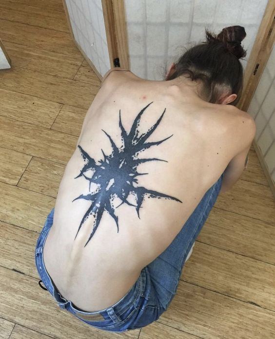
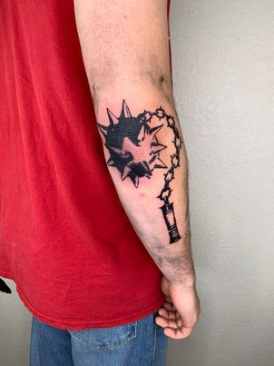
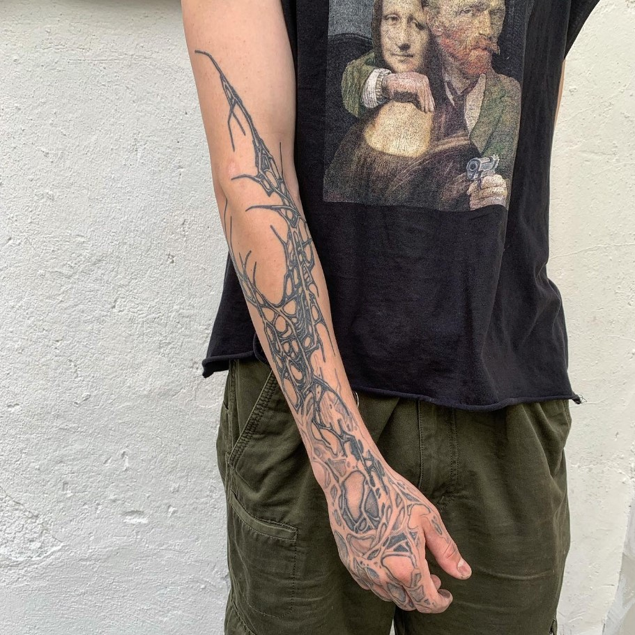
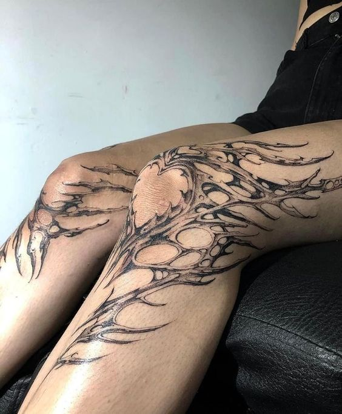
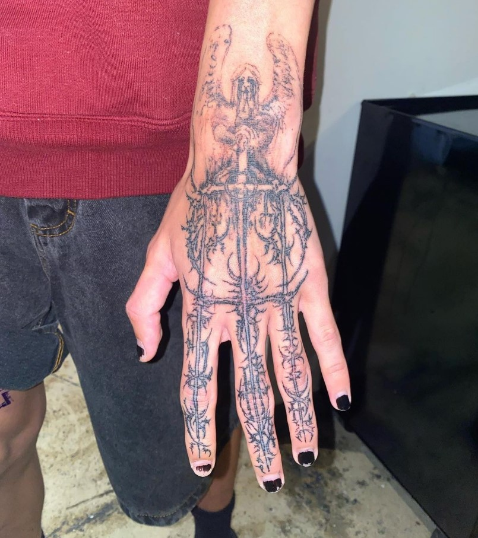

SEBASTIAN'S
TOP 5 LISTS
TOP 5 PENCILS
Pencils were my first introduction into art. I would
draw on books, notebooks, desks, walls, and anything
I could find. The 2B pencil has always been that reliable
pencil that always gets the job done. It's my favorite
cuase its been with me since the beginning. The 8B and
4B are my number 2 and 3 respectively on the list cause
I'm a big fan of thick pencils. For drawing these are
about as comically large as you're getting. And for
shading and initial sketching, 6H and F have always been
great, so they're rounding off the list at 4 and 5.
- Pencil
- 8B Pencil
- 4B Pencil
- 6H Pencil
- F Pencil
TOP 5 CHOCOLATES
My favorite chocolates of all time are on this list.
Reese's is by far my favorite chocolate cause it has
peanut butter and I love peanut butter. M&M'S are just
a classic and I can never stop eating them. The only
thing that stops me is the end of the bag. Milkyway and
Snickers are the same to me. It just depends on if I'm
in the mood for peanuts or not. And Butterfingers are
self-explanatory...peanut butter.
- Reese's
- M&M'S
- Milkyway
- Snickers
- Butterfingers
TOP 5 TATTOOS
I love tattoos. I love seeing people with tattoos.
And I love seeing artists make tattoos. Here are a
collection of my top 5 favorite placements for tattoos
in order of which ones I think look the most badass.
-

-

-

-

-

written by Sebastian Madriz